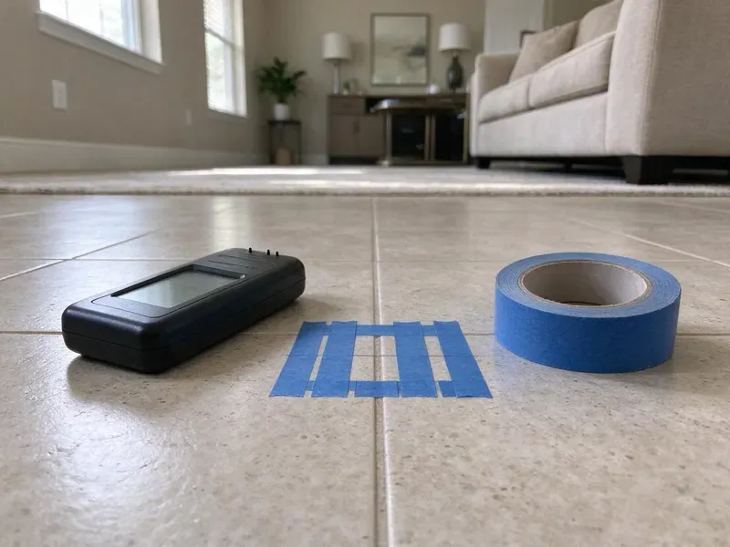
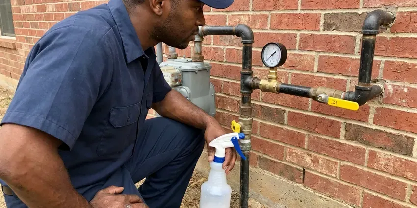

Plumbing Inspection in Norwalk, CT
Make sure your Norwalk, CT plumbing system is in top condition. GLV Plumbing offers expert plumbing inspections to catch problems early.
- Sewer Camera Video Included
- Written Photo Reports
- Local Norwalk Experts
- Licensed Connecticut Plumbers

Need a Plumbing Inspection Done Right in Norwalk, CT?
Our detailed assessments help you avoid expensive repairs and maintain a healthy plumbing system.
Plumbing Inspection Services for Buyers and Owners in Norwalk, CT
GLV Plumbing provides comprehensive plumbing inspection services built for homes in Norwalk, CT. Our detailed evaluations help identify potential problems, from hidden leaks to aging pipes, making sure your system operates efficiently and safely.
Our expertise includes:
- High-resolution sewer camera inspections for drain lines.
- Careful inspection of water heaters and gas lines.
- Meter leak tests, pressure readings and slab leak checks

Additional Plumbing Maintenance Services in Norwalk, CT
Our maintenance and specialty plumbing services in Norwalk, CT catch small problems before they become emergencies.




Local gas line repair by GLV Plumbing, Norwalk

Customers
Why Choose GLV Plumbing for Plumbing Inspection in Norwalk, CT?
Regular plumbing inspections are important for maintaining the integrity and longevity of your home's plumbing system. They help prevent unexpected breakdowns and expensive emergency repairs.
- Camera Proof, We record sewer video so you can see root intrusion, bellies or breaks for yourself.
- Code Compliance, Our licensed plumbers confirm your system meets current local plumbing codes, especially important for older homes or recent renovations.
- Foundation Protection, Shifting soil can cause slab leaks that damage foundations, and our inspections can detect these early.
Citywide Coverage
No matter where you are in Norwalk, CT, GLV Plumbing has you covered. We dispatch our skilled plumbers throughout the area to provide timely and effective plumbing inspections for every homeowner.
Experienced Team
Each inspector is trained on sewer camera systems, locators and pressure testing. That hands-on background makes reports accurate and practical.
Safety-First Approach
Safety is a top priority in every plumbing inspection we conduct. Our plumbers adhere strictly to all local and state safety regulations, ensuring that all work performed is not only effective but also completely safe for your household.
Trusted Certified Norwalk Plumbing Services Professionals
At GLV Plumbing, we take pride in providing certified plumbing services throughout Norwalk, CT. Backed by recognized industry credentials, our experienced plumbers combine technical skill with genuine customer care. Whether it is repair, installation, or maintenance, we follow strict safety and quality standards to deliver lasting results you can trust.
Call Us Now PHCC Plumbing Contractor Recognition
PHCC Plumbing Contractor Recognition Better Business Bureau (BBB) Accreditation
Better Business Bureau (BBB) Accreditation Angi Certified Pro
Angi Certified Pro ISO 9001 Quality Management Certification
ISO 9001 Quality Management CertificationReliable Plumbing Inspection Services in Norwalk, CT
Water Heater Inspections in Norwalk
We thoroughly inspect all types of water heaters, including tankless, electric, and gas models. Our checks include anode rod condition, sediment buildup, pressure relief valves, and burner assembly for gas units. This helps your water heater operates efficiently and safely, preventing sudden breakdowns and extending its lifespan in Norwalk.

Water Pressure and Supply Pipe Review in Norwalk, CT
We measure static water pressure and check the pressure reducing valve if one is installed. High pressure above 80 psi cuts the life of fixtures and appliance hoses. We also identify supply pipe material, from copper and CPVC to polybutylene, Kitec and galvanized. Knowing what you have helps you plan repairs or a full repipe.
Sewer Camera Inspection in Norwalk, CT
Many older homes have clay, cast iron or Orangeburg sewer lines that can crack, sag or fill with roots. We run a high-resolution camera from a cleanout to the city connection or septic tank. The video shows offsets, bellies, roots and breaks along with their depth and location. You keep a copy of the recording for your files.
Leak Detection and Assessment in Norwalk, CT
Our inspections include precise leak detection, using acoustic listening devices and thermal cameras to pinpoint hidden leaks behind walls, under floors, or in slab foundations. Early detection of leaks is vital to prevent extensive water damage and costly foundation repairs. High water tables in low-lying areas of Connecticut can push groundwater into basements during wet seasons and overwork sump pumps.
Seasonal Plumbing Health Checks in Norwalk, CT
Humid summers bring condensation on cold pipes and damp basements, which can rust fittings and encourage mold near plumbing. Our seasonal health checks focus on preparing your plumbing for local weather, inspecting exposed pipes for insulation needs, checking outdoor faucets, and confirming proper drainage to prevent freeze bursts or summer overheating problems in Norwalk, CT.
Pre-Purchase Plumbing Inspection in Norwalk
Before buying a home in Norwalk, a pre-purchase plumbing inspection by GLV Plumbing can save you from inheriting costly problems. Our detailed report will highlight any existing or potential plumbing issues, from faulty fixtures to aging main lines. This helps you to make an informed decision, negotiate repairs, or budget for future plumbing needs, avoiding unwelcome surprises after closing. It's an important step for any homebuyer in Connecticut.
Fixture, Drain and Shutoff Valve Check in Norwalk, CT
We run every faucet, shower and toilet and look for slow drains, leaks and weak flow. We test angle stops and the main shutoff valve, which often seize over time. We also check for proper venting and gurgling drains. Small fixes like these are easy to plan for once you know they exist.

Water Quality & Pipe Material Inspection in Norwalk, CT
We inspect your plumbing for issues related to local water quality and common pipe materials. Hard water can lead to mineral buildup, reducing pipe diameter and appliance efficiency. We assess the condition of various pipe types, including copper, PEX, and older galvanized or polybutylene pipes, which are common in some Norwalk homes and known for potential failure. Our inspection helps identify pipes at risk and recommend appropriate solutions.
Plumbing Inspection Near Me in Norwalk, CT
When you search for 'plumbing inspection near me' in Norwalk, CT, GLV Plumbing is your reliable local expert. We are deeply familiar with the plumbing challenges faced by homeowners in the area, from soil shifting that affects sewer lines to the impact of seasonal temperature changes on outdoor pipes. Our team is always ready to provide prompt and reliable service.
Our commitment to the Norwalk community means we're always ready to provide top-notch plumbing inspection services. You can rely on GLV Plumbing to be your convenient and reliable choice for a thorough plumbing health checkup right in your neighborhood, providing long-term peace of mind.
GLV Plumbing at a Glance
- Fully licensed plumbing team covering Norwalk, CT
- 24/7 emergency service with same-day scheduling
- Clear written estimates, no hidden fees
- 4.8-star rated by 946+ Connecticut customers
Norwalk Map
Norwalk Information
- Population
- 92,458
- Area codes
- 203/475/914
- Service area
- Norwalk and communities within 40 miles
- Nearby
- Stamford, Bridgeport, Milford, Danbury
A regular plumbing inspection is crucial for homes in Norwalk, CT to catch damage from shifting ground and mineral buildup before it spreads. High water tables in low-lying areas of Connecticut can push groundwater into basements during wet seasons and overwork sump pumps.
Expert Services
Trust our professionals for reliable GLV Plumbing solutions in Norwalk, CT.
Our Specialized Plumbing Services in Norwalk, CT
At GLV Plumbing, we provide a complete range of plumbing services across Norwalk, CT. From leak detection to full system installations, our team ensures fast, precise, and affordable service for both residential and commercial properties. Explore our core services below:


How Our Plumbing Inspection Process Works in Norwalk, CT
Our comprehensive plumbing inspection process is designed to be thorough and transparent, giving you a clear understanding of your home's plumbing health.
Request a Quote
Call (860) 487-7330 or fill out our online form to schedule your plumbing inspection. We will discuss your needs and provide an upfront quote.
On-Site Assessment
Our licensed plumber arrives on time to conduct a detailed visual and diagnostic inspection of your entire plumbing system, using specialized tools as needed.
Detailed Report
We provide a comprehensive report outlining our findings, any identified issues, and clear recommendations for necessary repairs or maintenance, complete with upfront pricing.
Frequently Asked Questions About Plumbing Inspection in Norwalk
The cost of a plumbing inspection in Norwalk, CT typically ranges from $150 to $350, depending on the size of your home and the complexity of the inspection. This fee covers a complete evaluation of your entire plumbing system, including fixtures, pipes, water heater, and drains. Specialty services like sewer camera inspections may be an additional charge.
No, a permit is usually not required for a plumbing inspection itself. Permits are usually necessary for actual plumbing repair, replacement, or installation work to confirm it meets local building codes. An inspection is a diagnostic service.
Our plumbers are experienced in inspecting all major brands and types of plumbing systems and components. This includes water heaters from manufacturers like Rheem, AO Smith, and Bradford White, as well as pipes made of PEX, copper, and PVC. We are familiar with various fixture brands and their specific requirements.
Yes. Older homes in Norwalk often have outdated plumbing systems, such as galvanized pipes, that are vulnerable to corrosion and leaks. A plumbing inspection can identify these age-related issues, helping you prioritize repairs and prevent major failures before they occur.
We recommend a professional plumbing inspection every 1 to 2 years for most homes. However, if you live in an older home, are buying a new property, or have experienced recurring plumbing problems, more frequent inspections might be helpful to catch problems early.
Yes, every inspection comes with a written report, photos and sewer video when included. Reports are ready the same day or the next business day.
Signs you might need an inspection include unexplained high water bills, recurring clogs, slow drains, discolored water, strange noises from pipes or water heater, or visible signs of moisture or mold. Any of these could point to an underlying issue that needs professional assessment.
Common signs include unexplained increases in your water bill, reduced water pressure, slow drains, discolored water, gurgling noises from drains, or damp spots on walls or floors. Any of these could indicate a hidden problem that a professional inspection can identify and address.
What People Are Saying About Our Plumbing Experts?

Daniel K.
A pipe burst at 11 pm and they actually answered. The plumber showed up within the hour, shut everything down, and had us back to normal the next morning. Could not ask for more.
Emergency Plumbing · Milford, CT
Patricia H.
We had a slab leak that two other companies could not find. GLV Plumbing located it in under an hour, explained our options, and the price matched the quote to the dollar.
Slab Leak Repair · Norwalk, CT
Mark T.
When our office needed drain cleaning, GLV Plumbing provided quick, reliable service. The plumber arrived on time and made sure every drain flowed perfectly before leaving. Very satisfied.
Drain Cleaning · Milford, CT
James P.
Our commercial plumbing system had a leak under the sink, and GLV Plumbing handled it professionally. The plumbers arrived quickly and restored everything without disruption to our customers.
Commercial Plumbing · Bridgeport, CT
Emily R.
I called GLV Plumbing for plumbing repair, and the technician was fast, polite, and thorough. They explained the problem clearly and fixed it the same day. I will definitely hire them again. Highly recommended!
Plumbing Repair · Stamford, CT
Laura S.
I scheduled a water heater replacement, and the team made the process smooth and affordable. The new unit works perfectly, and they cleaned up after completing the job.
Water Heater Replacement · Stamford, CT